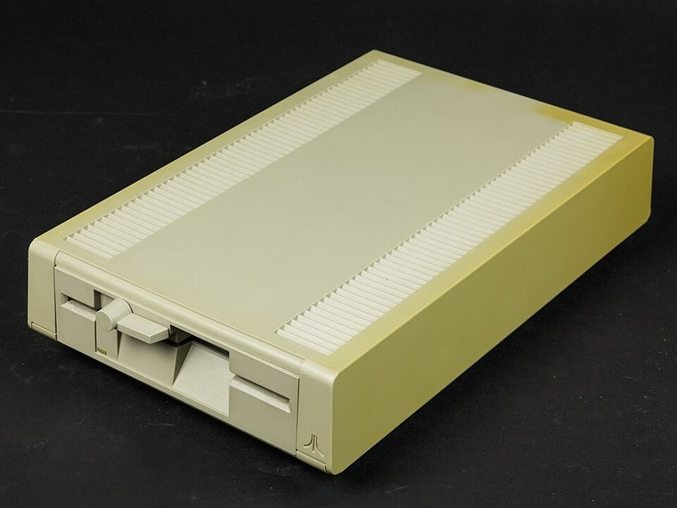

[ FLOPPY DRIVES // IDENTIFIED MODEL ]
Atari XF551 Disk Drive
The Atari XF551 is an external 5.25-inch floppy disk drive for Atari 8-bit computers. Its built-in controller and Atari SIO connection make it a system-specific drive, not a PC floppy mechanism.

MODEL IDENTIFICATION: Atari XF551; photograph the rear nameplate, serial, board/ROM markings, and any aftermarket modifications. This record keeps variant-dependent claims qualified; verify the physical unit and applicable manual before connecting, servicing, or formatting media.
Recorded specifications
| Catalog model | Atari XF551 Disk Drive |
|---|---|
| Device type | External 5.25-inch drive with integrated controller |
| Interface / connector | Atari SIO peripheral bus; host signaling and command behavior are documented in the XF551 owner/service material. |
| Media / formats | 5.25-inch disks. Atari DOS/controller software and disk geometry determine the recorded format; this catalog avoids applying a PC capacity label to the drive. |
| Revision caution | Match full model code, board/ROM/firmware revision, connector, cable, and documentation edition. Family-level ratings and host claims do not automatically apply to every unit. |
Host-controller and format compatibility
- Designed for Atari 8-bit computers with a compatible SIO connection and software. It does not attach directly to an IBM-PC 34-pin controller.
- Some host software and DOS versions may assume older Atari drive behavior; follow the XF551 manual and system-specific compatibility notes.
- Later service changes, ROM/board revisions, and aftermarket upgrades can affect boot and format support. Preserve actual revision identifiers.
Preservation and safe cleaning
Unplug power and SIO before opening or cleaning. Do not insert moldy, creased, shedding, or otherwise damaged media. Use the XF551 service procedure for head cleaning and adjustment; do not touch head surfaces or use solvents on disks.
For a disk acquisition, record the physical media label and condition, drive/model/revision, controller, host, software/firmware, settings, and any errors. Keep original media and raw captures/images unchanged; checksum verified copies and document conversions as derivatives.
Primary manuals & standards/archive references
- Atari DOS 2.5 XF551 Disk Drive Owner’s Manual — Internet ArchivePeriod owner documentation for the XF551 and Atari host use.
- Atari XF551 archival documentation collectionSupplementary archived materials; consult the exact owner/service manual for revision-specific procedures.
Source scope is stated per link. Prefer the matching manufacturer manual and revision over family summaries. Capacities and recording modes are omitted when not supported for the exact model and format.